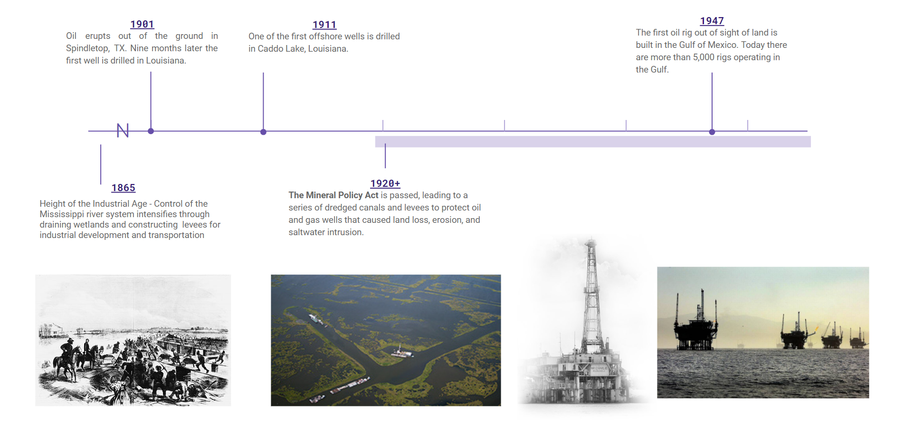

Fossil Fuels
 Read moreOil Field Blues by Walter Davis (1933)
"I'm going out on that oil field, tell me it's they payday over there
Goin' to carry my cards and dice, and I ain't goin' to play nothin' fair"
Timeline
The Delta region is home to thousands of offshore wells and the highest concentration of refineries in the country.
The ‘right to profit’ from petroleum and associated industries shaped all parts of the landscape that came into contact with the process of extracting, processing and distributing hydrocarbons. In the early twentieth century, African American laborers were coerced into building a system of levees to facilitate the transport of oil and stabilize land for pipelines, leading to dramatic land subsidence and wetland loss as well as restructuring the region’s hydrology in ways that would exacerbate catastrophic flooding.
As the oil and gas sectors inevitably collapse, they’ll leave behind thousands of miles of defunct pipelines and abandoned wells.
Louisiana is one of the only states where oil and gas companies can use eminent domain to claim land for fossil fuel infrastructure, so pipelines cross privately owned land like a spider web, creating a toxic slurry of leaky infrastructure, subsiding land, and whirring refineries churning through the region.

Even with the threatening presence of petroleum and petrochemical plants in the region, people still manage to resist.
In Louisiana and other Gulf states, the full power of the state bureaucracy has long been weaponized to legitimize and facilitate the exploitation of natural resources. Achieving a Green New Deal will create drastic changes for the fossil fuel industry. This will mean reducing and ultimately ending subsidies and tax credits for fossil fuel exploration, processing, distribution and marketing, investing in physical and social health-supporting infrastructure, and transitioning fossil fuel workers to well-paid, unionized jobs in other sectors.
Read more